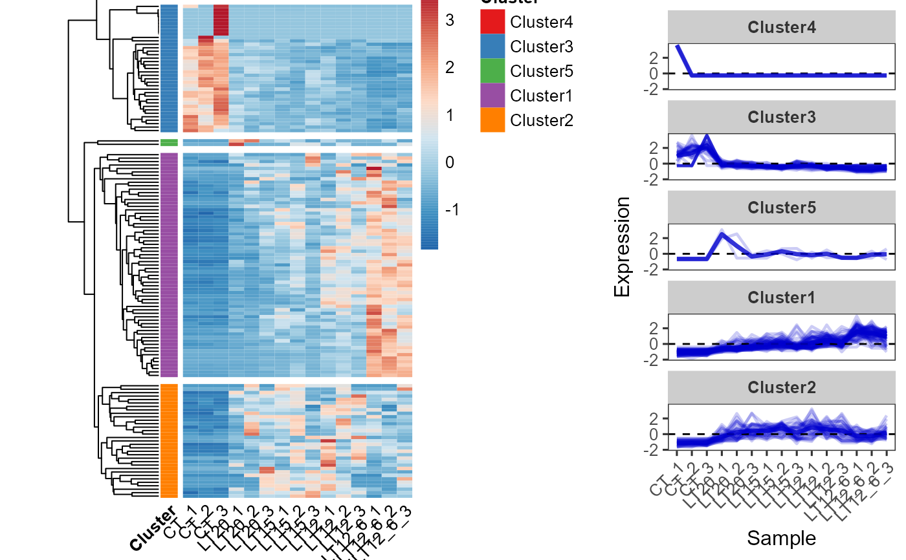
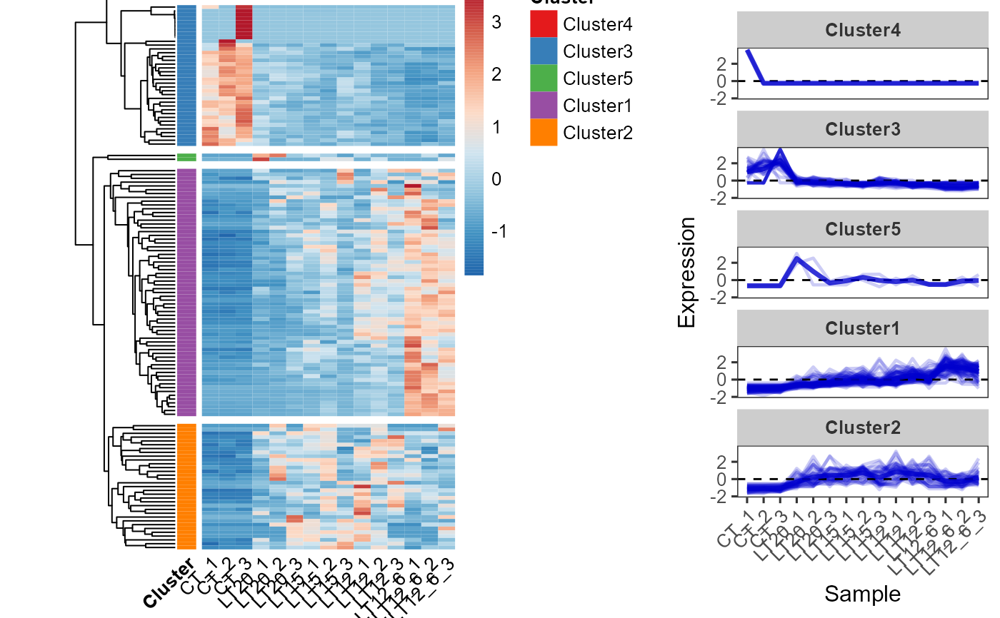
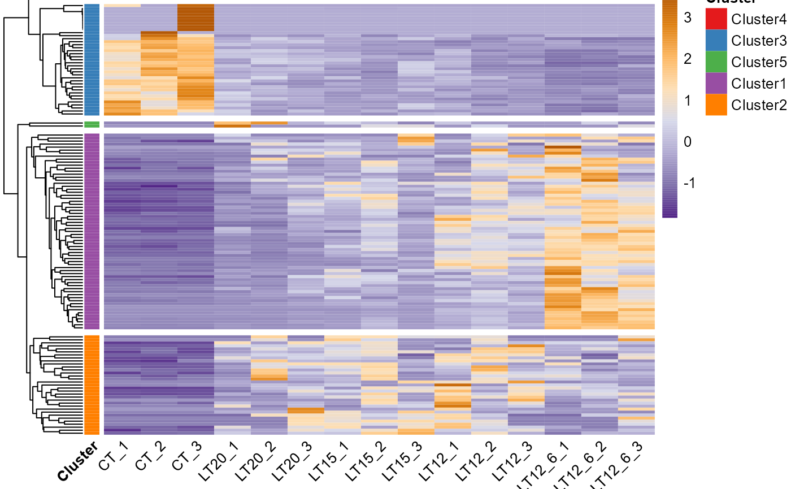
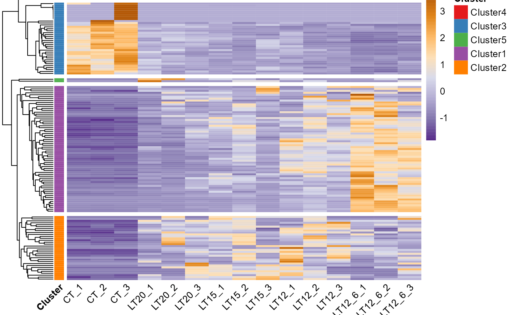
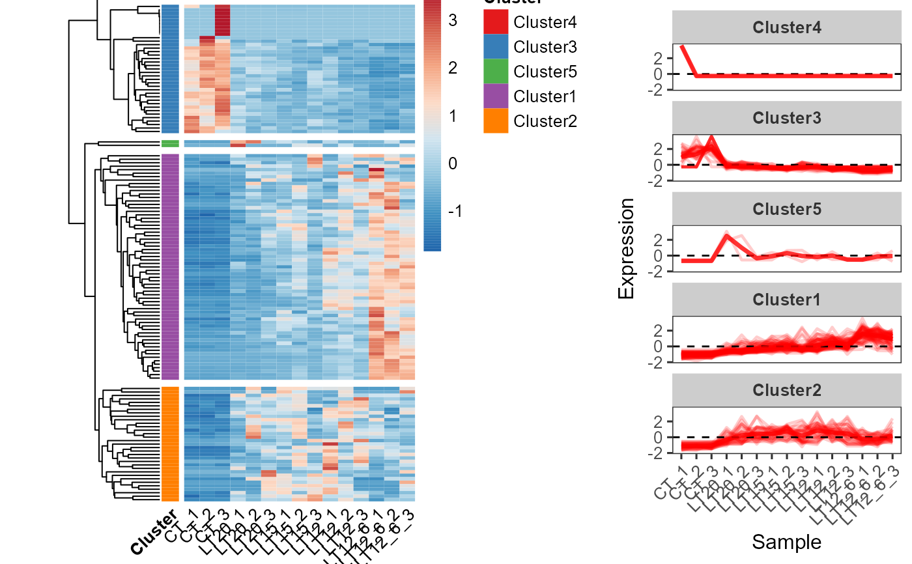
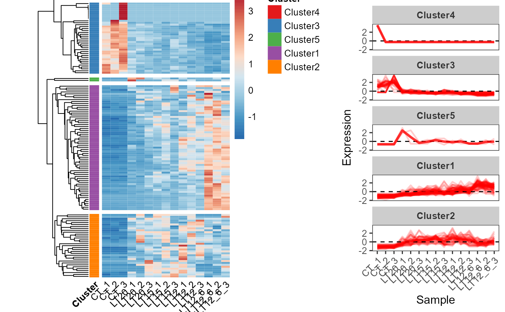

Heatmap cluster plot for visualizing clustered gene expression data.
Source:R/heatmap_cluster.R
heatmap_cluster.RdHeatmap cluster plot for visualizing clustered gene expression data.
Usage
heatmap_cluster(
data,
dist_method = "euclidean",
hc_method = "average",
k_num = 5,
palette = "Spectral",
cluster_pal = "Set1",
gaps_col = NULL,
angle_col = 45,
label_size = 10,
base_size = 12
)Arguments
- data
Dataframe: gene expression dataframe with cols (samples) and rows (genes).
- dist_method
Character: distance measure method. Default: "euclidean", options: "euclidean", "maximum", "manhattan", "canberra", "binary" or "minkowski".
- hc_method
Character: hierarchical clustering method. Default: "average", options: "ward.D", "ward.D2", "single", "complete","average" (= UPGMA), "mcquitty" (= WPGMA), "median" (= WPGMC) or "centroid" (= UPGMC).
- k_num
Numeric: the number of groups for cutting the tree. Default: 5.
- palette
Character: color palette used in heatmap. Default: "Spectral", options: 'Spectral', 'BrBG', 'PiYG', 'PRGn', 'PuOr', 'RdBu', 'RdGy', 'RdYlBu', 'RdYlGn'.
- cluster_pal
Character: color palette used for the cluster. Default: "Set1", options: 'Set1', 'Set2', 'Set3', 'Accent', 'Dark2', 'Paired', 'Pastel1', 'Pastel2'.
- gaps_col
Character: vector of columns indices that show where to put gaps into heatmap. Default: "NULL".
- angle_col
Numeric: angle of the column labels. Default: 45.
- label_size
Numeric: fontsize for the plot. Default: 10, min: 0.
- base_size
Numeric: base font size. Default: 12, min: 0.
Examples
# 1. Library TOmicsVis package
library(TOmicsVis)
# 2. Use example dataset gene_exp
data(gene_exp)
head(gene_exp)
#> M1 M2 M3 M4 M5 M6 M7 M8
#> RGL4 8.454808 8.019389 8.990836 9.718631 7.908075 4.147051 4.985084 4.576711
#> MPP7 8.690520 8.630346 7.080873 9.838476 8.271824 5.179200 5.200868 3.266993
#> UGCG 8.648366 8.600555 9.431046 7.923021 8.309214 4.902510 5.750804 4.492856
#> CYSTM1 8.628884 9.238677 8.487243 8.958537 7.357109 4.541605 6.370533 4.246651
#> ANXA2 4.983769 6.748022 6.220791 4.719403 3.284346 8.089850 10.637472 7.214912
#> ENDOD1 5.551640 5.406465 4.663785 3.550765 4.103507 8.393991 9.538503 9.069923
#> M9 M10
#> RGL4 4.930349 4.293700
#> MPP7 5.565226 4.300309
#> UGCG 4.659987 3.306275
#> CYSTM1 4.745769 3.449627
#> ANXA2 9.002710 5.123359
#> ENDOD1 8.639664 7.106392
# 3. Default parameters
heatmap_cluster(gene_exp)
 #> Using Cluster, gene as id variables
#> Warning: The `fun.y` argument of `stat_summary()` is deprecated as of ggplot2 3.3.0.
#> ℹ Please use the `fun` argument instead.
#> ℹ The deprecated feature was likely used in the TOmicsVis package.
#> Please report the issue at
#> <https://github.com/benben-miao/TOmicsVis/issues/>.
#> Warning: Graphs cannot be horizontally aligned unless the axis parameter is set. Placing graphs unaligned.

# 4. Set palette = "RdBu"
heatmap_cluster(gene_exp, palette = "RdBu")
#> Using Cluster, gene as id variables
#> Warning: The `fun.y` argument of `stat_summary()` is deprecated as of ggplot2 3.3.0.
#> ℹ Please use the `fun` argument instead.
#> ℹ The deprecated feature was likely used in the TOmicsVis package.
#> Please report the issue at
#> <https://github.com/benben-miao/TOmicsVis/issues/>.
#> Warning: Graphs cannot be horizontally aligned unless the axis parameter is set. Placing graphs unaligned.

# 4. Set palette = "RdBu"
heatmap_cluster(gene_exp, palette = "RdBu")
 #> Using Cluster, gene as id variables
#> Warning: Graphs cannot be horizontally aligned unless the axis parameter is set. Placing graphs unaligned.

# 5. Set cluster_pal = "Accent"
heatmap_cluster(gene_exp, cluster_pal = "Accent")
#> Using Cluster, gene as id variables
#> Warning: Graphs cannot be horizontally aligned unless the axis parameter is set. Placing graphs unaligned.
#> Using Cluster, gene as id variables
#> Warning: Graphs cannot be horizontally aligned unless the axis parameter is set. Placing graphs unaligned.

# 5. Set cluster_pal = "Accent"
heatmap_cluster(gene_exp, cluster_pal = "Accent")
#> Using Cluster, gene as id variables
#> Warning: Graphs cannot be horizontally aligned unless the axis parameter is set. Placing graphs unaligned.
 
